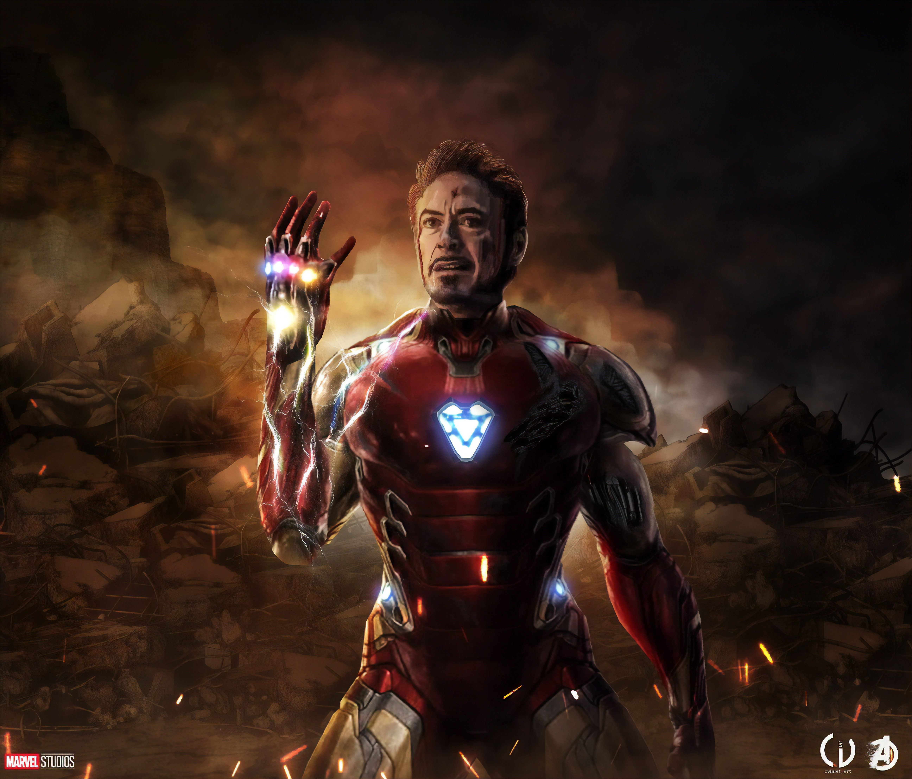

alt="Avengers" width="5184" height="4428">
Iron Man is one of the most intelligent superheroes in the Marvel Universe. He uses his intelligence, technology, and innovation to protect the world. Unlike other heroes, Iron Man has no natural superpowers.
Tony Stark was born into a wealthy family and was a child genius. He inherited Stark Industries after the death of his parents. Initially, he lived a careless life focused on success and fame.
Tony Stark was kidnapped during a weapons demonstration. After being injured, he created a mini arc reactor to keep himself alive. This event changed his life and made him realize the harm caused by his weapons.
Using his intelligence and engineering skills, Tony built the first Iron Man suit. He decided to stop manufacturing weapons and became a superhero to protect humanity.
The Iron Man suit is powered by the Arc Reactor. Tony Stark created many versions of the suit, each more advanced than the previous one. The suit represents technology, innovation, and responsibility.
Iron Man is a founding member of the Avengers. He provides advanced technology, funding, and strategy to the team. Over time, he learns teamwork and sacrifice.
Tony Stark is confident, intelligent, and witty. He grows from a selfish businessman into a responsible hero who cares deeply about protecting Earth.
Iron Man’s journey shows that true heroism comes from choices and responsibility. His sacrifice inspires others to stand up and protect the world.